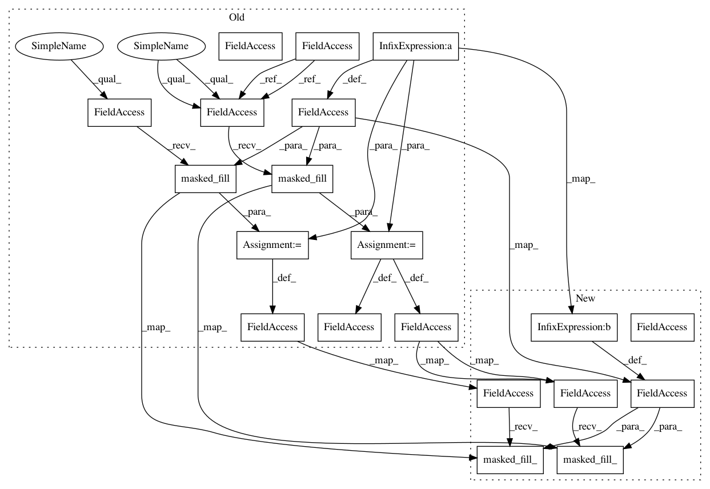

7895b442152e923cefd3eb8bd0346e1ae4180b14,bindsnet/network/nodes.py,AdaptiveLIFNodes,step,#AdaptiveLIFNodes#Any#Any#,308
Before Change
| :code:`dt` (:code:`float`): Simulation time step.
"""
// Decay voltages and adaptive thresholds.
self.v -= dt * self.decay * (self.v - self.rest)
self.theta -= dt * self.theta_decay * self.theta
// Decrement refractory counters.
self.refrac_count[self.refrac_count != 0] -= dt
// Check for spiking neurons.
self.s = (self.v >= self.thresh + self.theta) * (self.refrac_count == 0)
// Refractoriness, voltage reset, and adaptive thresholds.
self.refrac_count = self.refrac_count.masked_fill(self.s, self.refrac)
self.v = self.v.masked_fill(self.s, self.reset)
self.theta += self.theta_plus * self.s.float()
// Integrate inputs.
self.v += inpts
super().step(inpts, dt)
After Change
self.refrac_count[self.refrac_count != 0] -= dt
// Check for spiking neurons.
self.s = (self.v >= self.thresh + self.theta) & (self.refrac_count == 0)
// Refractoriness, voltage reset, and adaptive thresholds.
self.refrac_count.masked_fill_(self.s, self.refrac)
self.v.masked_fill_(self.s, self.reset)
self.theta += self.theta_plus * self.s.float()
// Integrate inputs.
self.v += inpts
In pattern: SUPERPATTERN
Frequency: 3
Non-data size: 20
Instances
Project Name: BindsNET/bindsnet
Commit Name: 7895b442152e923cefd3eb8bd0346e1ae4180b14
Time: 2018-06-11
Author: djsaunde@umass.edu
File Name: bindsnet/network/nodes.py
Class Name: AdaptiveLIFNodes
Method Name: step
Project Name: BindsNET/bindsnet
Commit Name: 7895b442152e923cefd3eb8bd0346e1ae4180b14
Time: 2018-06-11
Author: djsaunde@umass.edu
File Name: bindsnet/network/nodes.py
Class Name: DiehlAndCookNodes
Method Name: step
Project Name: BindsNET/bindsnet
Commit Name: 7895b442152e923cefd3eb8bd0346e1ae4180b14
Time: 2018-06-11
Author: djsaunde@umass.edu
File Name: bindsnet/network/nodes.py
Class Name: LIFNodes
Method Name: step